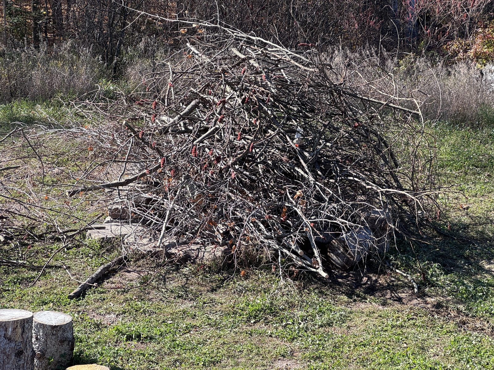
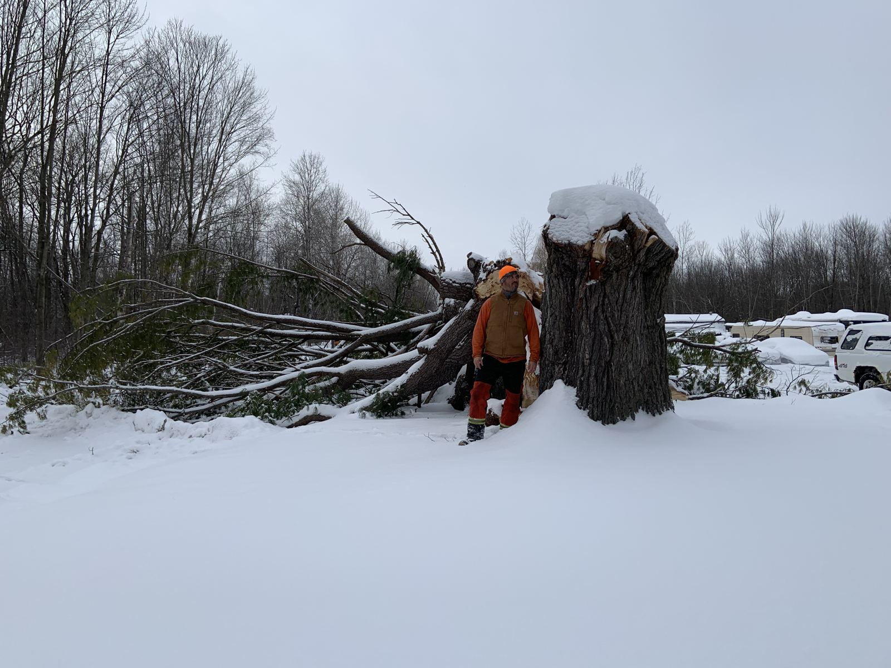
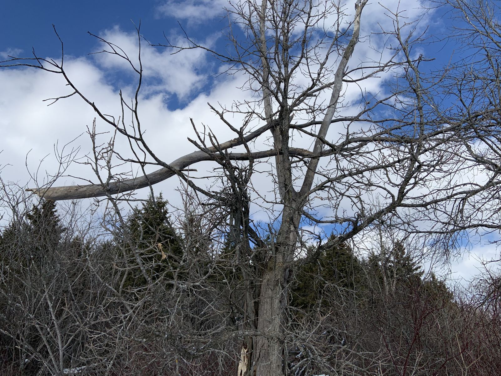
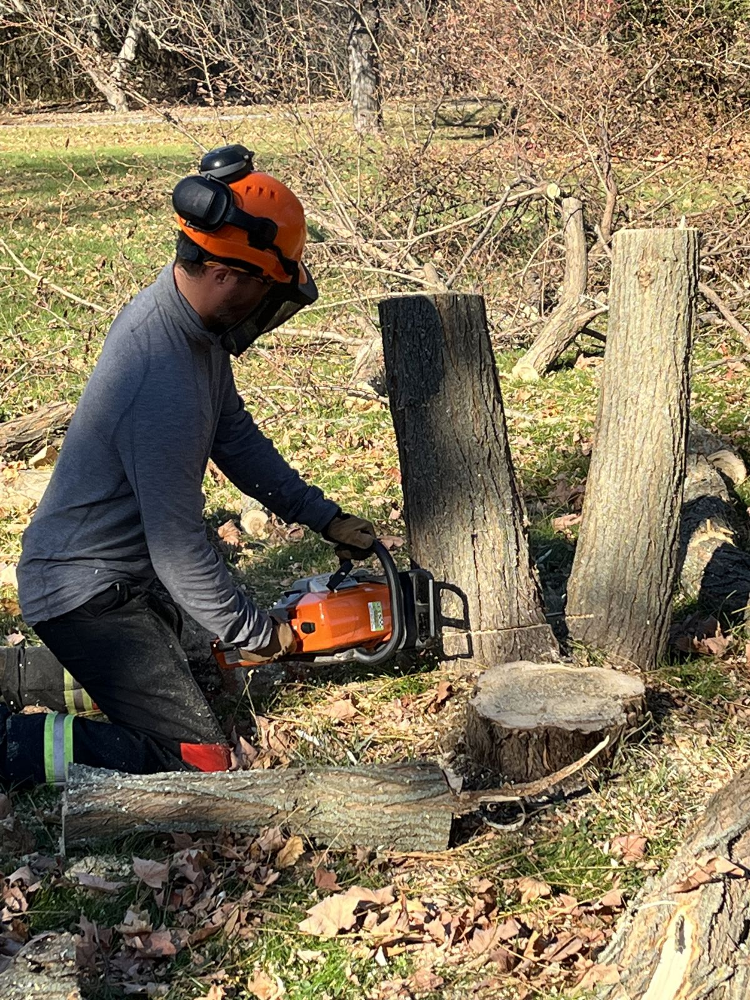
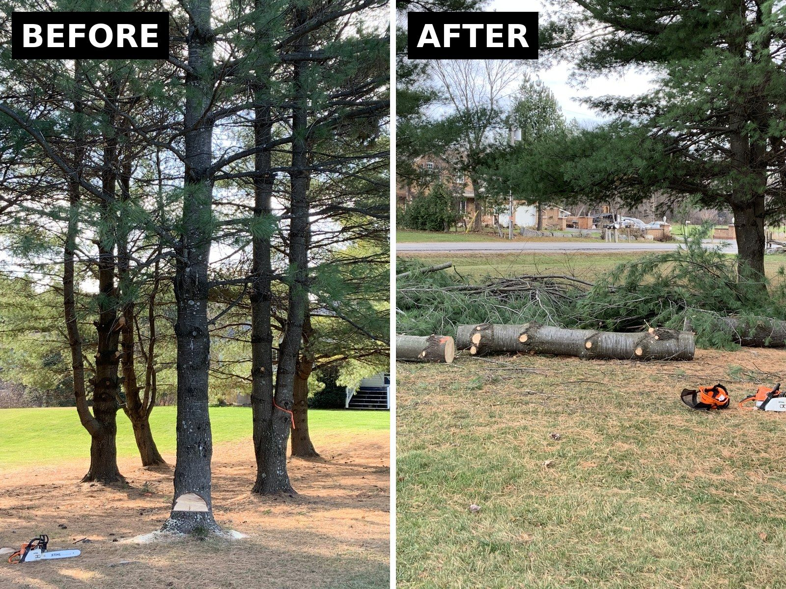
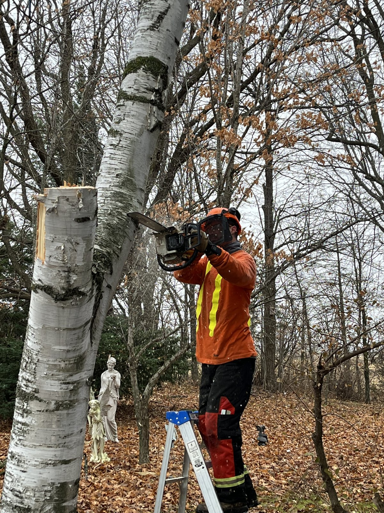

Our work
Trees Trevor has brought down. New photos are added every week.

Brush pile, Madoc Brush work: Trevor's least favourite job, and a necessary evil. He doesn't do it often, but when he does, it gets done right.

Storm-broken tree, Ottawa A big tree split and came down beside the house in a December storm.

Dead tree with a hung limb, Metcalfe A classic widowmaker: a broken limb caught up in the crown of a dead tree, waiting to drop.

Stumping a tree, Morewood Cutting the stems down low to the ground after the fell, in full protective gear.

Pine before and after, Ottawa A tall pine notched and felled, then cut into logs with the brush piled for clean-up.

Birch taken down in sections, Morewood Cutting a tall birch stem from a ladder, one piece at a time.
More on YouTube: @timberfellerca